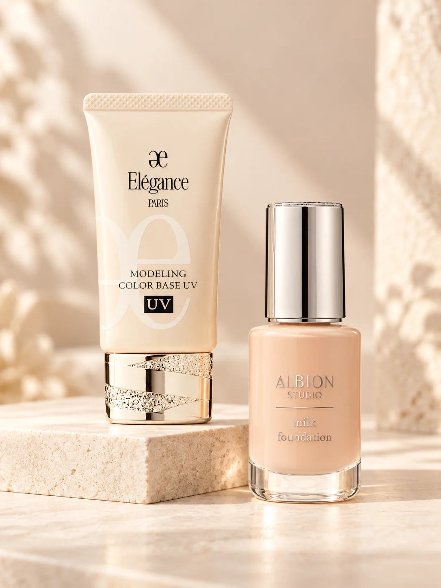
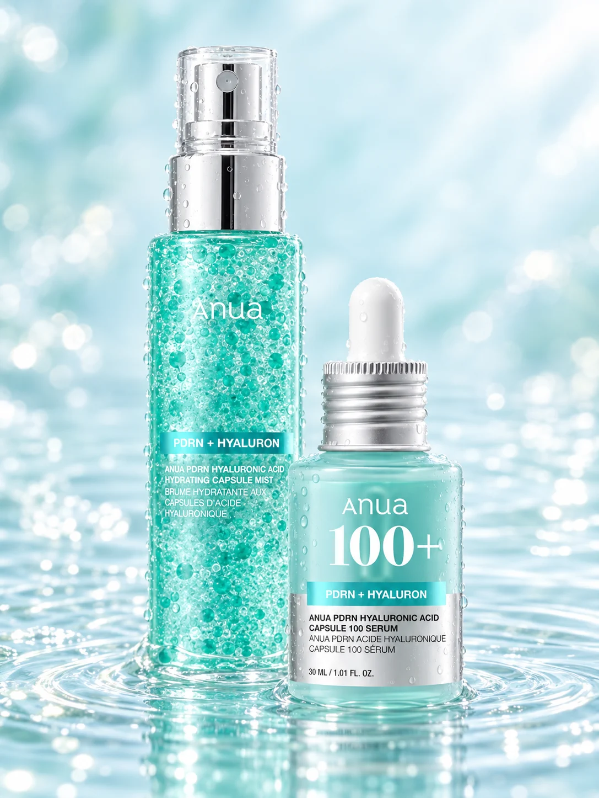

自分を好きになる、やわらかな世界観。
ピンクを取り入れた色合いと写真を組み合わせ、美容に親しみを感じられる雰囲気を考えました。トップからスキンケアとメイク、それぞれの紹介へ進める構成です。
WORK 02 / 2026 / WEB DESIGN / CODING
ふっくーのメイク・スキンケア。自分の言葉で紹介する美容ノート。

MY SKINCARE & MAKEUP毎日のスキンケアと普段のメイクについて、使用アイテムや手順を紹介するサイトです。自分が使っているものの使用感を交えながら、自分の言葉で伝える美容ノートを目指しました。
メイクやスキンケアに興味があり、普段の手順や使用アイテムを知りたい人を想定しています。
ピンクを取り入れた色合いと写真を組み合わせ、美容に親しみを感じられる雰囲気を考えました。トップからスキンケアとメイク、それぞれの紹介へ進める構成です。
ルーティンの説明と使用アイテムの紹介を分け、気になる商品を選んで詳細を確認できるようにしました。カードや画面の切り替えにも動きを取り入れています。

サイトで使用しているスキンケア用品の画像
スマートフォンでも読みやすく操作できるように、画面幅に応じたレイアウトを整えることが今後の課題です。文章と画像のバランスも見直し、必要な情報へ進みやすくしていきたいです。